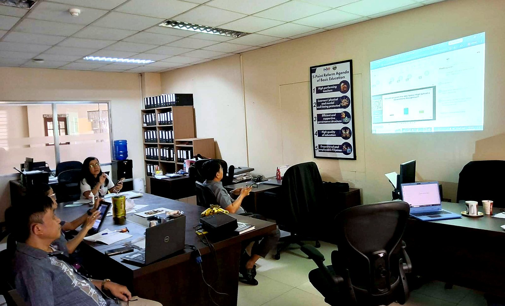

About the Quality Assurance Division
Technical assistance, monitoring, evaluation, quality management, and continuous improvement support for SOCCSKSARGEN Region XII.
Ensuring Quality, Strengthening Systems, Improving Outcomes
The Quality Assurance Division of the Department of Education – SOCCSKSARGEN Region XII provides technical assistance, monitoring, evaluation, quality management, and continuous improvement support to ensure that education programs, processes, and services are implemented effectively, efficiently, and consistently in accordance with DepEd policies and standards.
As provided in the QAD Operations Manual (OpsManual Rev 00), QAD shall provide the Regional Office and the Schools Division Offices with a guide in decision-making and policy directions compliant with standards of quality basic education by promoting accountability and transparency towards continuous improvement. Its Key Result Areas are:
- Quality Assurance Framework, Policies, Systems and Processes
- Assessment, Monitoring, and Evaluation
- Regulatory and Developmental Services to Schools
DepEd SOCCSKSARGEN Regional Office operates with eight (8) functional divisions, one of which is QAD. The Division is headed by a Chief Education Supervisor, assisted by five (5) Education Program Supervisors and one (1) Administrative Assistant. From Operations Manual
The Division serves the DepEd Regional Office personnel, Schools Division Offices (SDOs), school heads, teachers, non-teaching personnel, quality assurance personnel, private schools, education program supervisors, Internal Quality Audit Teams, and other external stakeholders — including parents and the general public who rely on transparent, quality education services.

What Guides the Division
[Official QAD Vision statement — to be provided by the Quality Assurance Division, DepEd Region XII. This card is reserved for the approved vision text.]
Drafting note: a vision statement should describe the future state of quality education the Division aspires to achieve for Region XII.
[Official QAD Mission statement — to be provided by the Quality Assurance Division, DepEd Region XII. This card is reserved for the approved mission text.]
Drafting note: a mission statement should describe how the Division serves schools, divisions, and stakeholders through QA programs and services.
What the Division Does
The core functions below are drawn from the Division's mandate and Key Result Areas as stated in the QAD Operations Manual. Official
-
Quality Management
Establish and maintain the regional QMS, quality policy, objectives, process maps, and management review cycle.
-
Internal Quality Audit
Plan and conduct internal audits; verify corrective actions and share audit insights across offices and divisions.
-
Monitoring & Evaluation
Monitor program implementation, evaluate outcomes, and report performance against quality benchmarks.
-
Technical Assistance
Provide coaching, mentoring, and capability building for SDOs, schools, and personnel on QA practices.
-
Compliance Monitoring
Verify school and program compliance with DepEd policies, standards, and requirements.
-
Continuous Improvement
Facilitate improvement projects, quality circles, corrective actions, and best-practice sharing.
-
Risk Management
Apply risk-based thinking — identify, analyze, and treat organizational risks and opportunities.
-
Data Quality Assurance
Validate and govern education data used for planning, monitoring, and decision-making.
How QAD is Organized
Per the QAD Operations Manual (OpsManual Rev 00) — DepEd SOCCSKSARGEN Regional Office. Official
Eight (8) functional divisions operate under the Regional Office; QAD is one of them. Internal Quality Audit Teams are constituted as needed per audit cycle (see Office Orders in Issuances).
Meet the Team
Leadership as provided by the Division. Remaining roster entries are placeholders until confirmed.
Norman S. Valeroso, PhD
Chief, Quality Assurance DivisionCurrent
Atty. Alberto T. Escobarte, CESO II
Regional DirectorCurrent
[Full Name]
Education Program Supervisors (×5)Placeholders
[Full Name]
Administrative Assistant IPlaceholder
Quality Assurance Division
Department of Education · Regional Office XII · SOCCSKSARGEN Region From Operations Manual
Office Address
Prime Regional Government Center, Brgy. Carpenter Hill, City of Koronadal
Telephone
(083) 2288825 / (083) 2281893